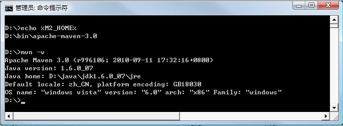

Apache Maven,是一个软件(特别是 Java 软件)项目管理及自动构建工具,由 Apache 软件基金会所提供。 基于项目对象模型(缩写:POM)概念,Maven 利用一个中央信息片断能管理一个项目的构建、报告和文档等 步骤。曾是 Jakarta 项目的子项目,现为独立 Apache 项目。
brew install maven，brew安装mvn -v查看maven版本➜ ~ mvn -v
Apache Maven 3.2.1 (ea8b2b07643dbb1b84b6d16e1f08391b666bc1e9; 2014-02-15T01:37:52+08:00)
Maven home: /usr/local/Cellar/maven/3.2.1/libexec
Java version: 1.7.0_55, vendor: Oracle Corporation
Java home: /Library/Java/JavaVirtualMachines/jdk1.7.0_55.jdk/Contents/Home/jre
Default locale: zh_CN, platform encoding: UTF-8
OS name: "mac os x", version: "10.9.4", arch: "x86_64", family: "mac"
M2_HOME=/home/juven/bin/apache-mavenmvn -v查看maven版本➜ ~ mvn -v
Apache Maven 3.2.2 (45f7c06d68e745d05611f7fd14efb6594181933e; 2014-06-17T21:51:42+08:00)
Maven home: /root/apache-maven-3.2.2
Java version: 1.7.0_09-icedtea, vendor: Oracle Corporation
Java home: /usr/lib/jvm/java-1.7.0-openjdk-1.7.0.9.x86_64/jre
Default locale: zh_CN, platform encoding: UTF-8
OS name: "linux", version: "2.6.32-358.el6.x86_64", arch: "amd64", family: "unix"
mvn -v显示： Maven 项目使用称为项目对象模型(Project Object Model,POM)来配置的,项目对象模型存储在命名为 pom.xml 的文件中,以下是一个简单的示例:
<project>
<modelVersion>4.0.0</modelVersion>
<groupId>com.mycompany.app</groupId>
<artifactId>my-app</artifactId>
<version>1.0</version>
<dependencies>
<dependency>
<groupId>junit</groupId>
<artifactId>junit</artifactId>
<version>4.11</version>
<scope>test</scope>
</dependency>
</dependencies>
</project>
首先创建一个文件夹 first,进入该文件夹,新建一个 pom.xml 文件,输入如下内容:
<?xml version="1.0" encoding="utf-8" ?>
<projectxmlns="http://maven.apache.org/POM/4.0.0" xmlns:xsi="http://www.w3.org/2001/XMLSchema-instance"
xsi:schemaLocation="http://maven.apache.org/POM/4.0.0 http://maven.apache.org/xsd/maven-4.0.0.xsd">
<modelVersion>4.0.0</modelVersion>
<groupId>com.shareku</groupId>
<artifactId>first</artifactId>
<version>1.0-SNAPSHOT</version>
<packaging>jar</packaging>
<name>first</name>
</project>
maven 坐标
<?xml version="1.0" encoding="UTF-8"?>
<projectxmlns="http://maven.apache.org/POM/4.0.0"xmlns:xsi="http://www.w3.org/2001/XMLSchema-instance"xsi:schemaLocation="http://mavenapache.org/POM/4.0.0 http://maven.apache.org/maven-v4_0_0.xsd">
<modelVersion>4.0.0</modelVersion>
<!-- 这里只能是4.0.0,用于指定当前pom模型版本 -->
<groupId>com.rytong.emp</groupId>
<!-- groupId的命名与包的命名方式一样 -->
<artifactId>Emp</artifactId>
<!-- 定义maven项目的名称，将来生成的构件就以此来命名 -->
<version>1.0</version>
<!-- 定义当前项目的版本，开发版本一般以SNAPSHOT命名 -->
<packaging>apk</packaging>
<!-- 定义将来打包生成构件的扩展名，默认为jar文件 -->
<name>emp</name>
<!--标识方便交流，不是必须的标签 -->
<dependencies>
<!--设置依赖合集-->
<dependency>
<!--依赖的参数都有：
-groupId , artifactId , version :依赖的基本坐标，maven根据坐标找到需要的依赖
-type :以来的类型，与项目坐标定义的packaging一致，缺省为jar
-scope：依赖的范围
-exclusions：用于排除依赖-->
<groupId>com.rytong.officereader</groupId>
<artifactId>OfficeReader</artifactId>
<version>1.0</version>
<scope>compile</scope>
<!--定义依赖的范围：
compile:编译依赖范围，对于三套classpath都有效，默认也是使用该依赖范围
test:测试依赖范围，只对于测试有效，即只有在编译，运行测试时才需要
provided:已提供依赖范围，只对于编译，测试时有效，运行时无效
runtime:运行时依赖范围，对于测试、运行时有效，比如jdbc驱动实现-->
</dependency>
<dependency>
<!--依赖android的sdk版本-->
<groupId>com.google.android</groupId>
<artifactId>android</artifactId>
<version>2.2.1</version>
<scope>provided</scope>
</dependency>
</dependencies>
<build>
<finalName>${artifactId}</finalName>
<!--指定去掉后缀名后的工程名字，例如：默认为${artifactId}-${version}-->
<sourceDirectory>src</sourceDirectory>
<!--定义需要编译文件的存放目录-->
<!---->
<plugins>
<plugin>
<!--定义一个编译android的插件-->
<groupId>com.jayway.maven.plugins.android.generation2</groupId>
<artifactId>android-maven-plugin</artifactId>
<version>3.9.0-rc.1</version>
<configuration>
<androidManifestFile>${project.basedir}/AndroidManifest.xml</androidManifestFile>
<!--定义androidmanifest.xml文件的路径
${project.basedir}的意为project基目录的绝对路径-->
<assetsDirectory>${project.basedir}/assets</assetsDirectory>
<!--定义assets目录（存放的是一些配置文件）的路径-->
<resourceDirectory>${project.basedir}/res</resourceDirectory>
<!--存放资源文件的路径-->
<nativeLibrariesDirectory>${project.basedir}/libs</nativeLibrariesDirectory>
<!--本地库文件路径-->
<sdk>
<!--定义sdk的版本-->
<platform>8</platform>
</sdk>
<deleteConflictingFiles>true</deleteConflictingFiles>
<!--删除冲突的文件-->
</configuration>
<!--设置execution下列表的goals 的设置，而不是plugin所有goals的设置-->
<extensions>true</extensions>
<!--extensions：true or false，决定是否要load这个plugin的extensions-->
<inherited>true</inherited>
<!--是否让子pom继承true or false-->
</plugin>
<plugin>
<!--使用maven-compiler-plugin插件编译项目的源代码-->
<artifactId>maven-compiler-plugin</artifactId>
<version>3.1</version>
<configuration>
<source>1.7</source>
<target>1.7</target>
<encoding>UTF-8</encoding>
<!--定义编译目标的编码为utf-8-->
</configuration>
</plugin>
</plugins>
</build>
</project>
mvn install:install-file -Dfile=C:\Users\wangmingyu\Desktop\branches\Tools\target\Tools-1.0.jar -DgroupId=com.rytong.tools -DartifactId=Tools -Dversion=1.0 -Dpackaging=jar<properties>
<project.build.sourceEncoding>UTF-8</project.build.sourceEncoding>
<maven.compiler.encoding>UTF-8</maven.compiler.encoding>
</properties>
<artifactId>maven-surefire-plugin</artifactId>
<configuration>
<testFailureIgnore>true</testFailureIgnore>
</configuration>
Maven本身并不是一个单元测试框架，它只是在构建执行到特定生命周期阶段的时候，通过插件来执行JUnit或者TestNG的测试用例。这个插件就是maven-surefire-plugin，也可以称为测试运行器(Test Runner)，它能兼容JUnit 3、JUnit 4以及TestNG。
在默认情况下，maven-surefire-plugin的test目标会自动执行测试源码路径（默认为src/test/java/）下所有符合一组命名模式的测试类。这组模式为：
<dependency>
<groupId>junit</groupId>
<artifactId>junit</artifactId>
<version>4.11</version>
<scope>provided</scope>
</dependency>
<plugin>
<groupId>org.apache.maven.plugins</groupId>
<artifactId>maven-surefire-plugin</artifactId>
<inherited>true</inherited>
</plugin>
maven编译打包的过程中会默认执行项目中已经存在的单元测试。
如果需要自定义执行，需要按照以下命令操作：
mvn test -Dtest=RandomGeneratorTest mvn test -Dtest=Random*Testmvn test -Dtest=Random*Test,AccountCaptchaServiceTest maven-surefire-plugin会在项目的target/surefire-reports目录下生成两种格式的错误报告。
简单文本格式——内容十分简单，可以看出哪个测试项出错。
与JUnit兼容的XML格式——XML格式已经成为了Java单元测试报告的事实标准，这个文件可以用其他的工具来查看（例如：jenkins）。